2．算术
埃及人用的象形数字记号是：表示1，表示10，及
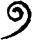
表示100，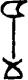
表示1000，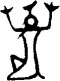
表示10000，以及表示更大单位的其他记号。介乎其间的各数则由这些记号组合而成。书写的方式是从右往左的，故表示24。这套数字写法是以10为底的，但不是进位制的。埃及僧侣文的整数写法可用下面几个记号作为例子：
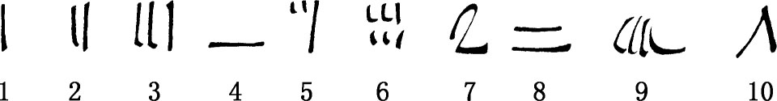
他们的算术主要用叠加法。做通常加减法时，他们只是靠添上或划掉一些记号，以求得最后结果。乘除法也是化成叠加步骤来做的。比如说，计算12乘12时，埃及人的做法如下：
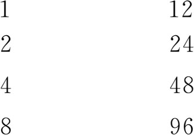
每行是由上一行取二倍得出的。有了4·12＝48和8·12＝96，把48和96相加，这就得到12·12。这种算法当然同分别乘以10和乘以2然后相加的算法很不一样。乘以10的算法他们也做，这时他们把表示1的记号改成表示10的记号，把表示10的记号改成表示100的记号。
埃及人做一个整数除以另一整数的算法也是很有意思的。例如，他们做19除以8的算法如下：
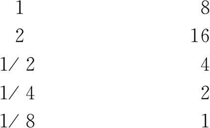
于是得解答为2＋1/4＋1/8。求解的思想无非是取8的倍数和部分数，使之合并成19。
埃及数系中分数的记法比我们今日的复杂得多。记号
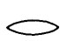
读作ro，原表示1/320蒲式耳（谷物容量，一蒲式耳合八加仑。——译者），埃及人用来表示一个分数。在僧侣文中把这卵形改成一个点。这卵形或点通常记在整数上，表明它是个分数。例如在象形文字写法中，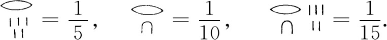
少数几个分数用特殊记号表示。如象形记号
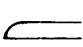
表示1/2；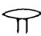
表示2/3；×表示1/4。除了几个特殊分数之外，所有分数都拆成一些所谓单位分数。例如，阿梅斯把2/5写成1/3＋1/15。加法记号是没有的，但从上下文可以看出加的意思。莱因德草片文书里有个数表，把分子为2而分母为5到101的奇数的这类分数，表达成分子为1的分数之和。利用这表，可把7/29这样一个分数（这在阿梅斯看来是整数7除以整数29）表达成单位分数之和。由于7＝2＋2＋2＋1，他把每个2/29表达成分子为1的分数之和。把这些结果加起来，并作进一步的变换，最后得到一些单位分数之和，其中每个分数的分母各不相同。所得7/29的最后这种表达式是
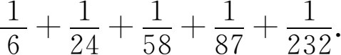
这里凑巧7/29还可表达成1/5＋1/29＋1/145，不过用了阿梅斯的2/n数表会得出头一个结果，所以他就用头一个表达式。把分数a/b表达成单位分数之和是系统地按照老办法做的。埃及人利用单位分数就可对分数进行四则运算。埃及人之所以未能把算术和代数发展到高的水平，其分数运算之繁复也是原因之一。
埃及算术里也如巴比伦一样未能认识到无理数的性质。代数问题中出现的简单平方根，他们是能够用整数和分数来表达的。